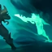

GIFT OF THE DROWNED ONES
When Pyke is hidden from enemies, he regenerates damage that he has recently taken from champions.
Pyke also cannot gain extra Maximum Health from any source, and instead gains Bonus AD.
BONE SKEWER
Pyke either stabs an enemy in front of him or pulls an enemy towards him.
GHOSTWATER DIVE
Pyke enters Camouflage and gains significant Move Speed that decays over time.
PHANTOM UNDERTOW
Pyke dashes and leaves behind a phantom that will return to him, stunning enemy champions along its path.
DEATH FROM BELOW
Pyke blinks to and executes low health enemies, allowing him to cast this spell again and granting additional gold to an ally who assists.